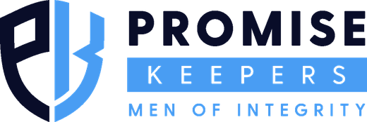
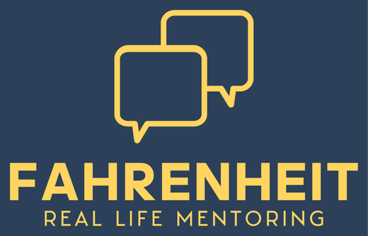
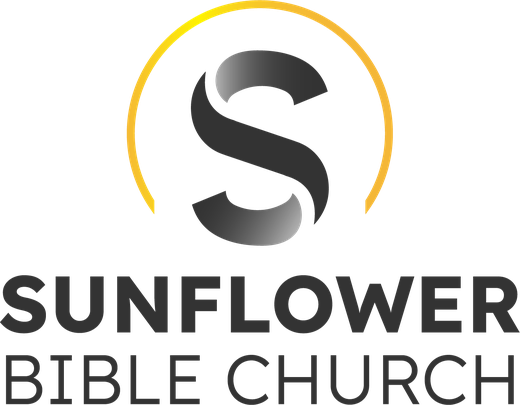

Promise Keepers
Building men of integrity
A longstanding commitment to calling men toward deeper faith, integrity, brotherhood, and leadership in their families, churches, and communities.
Give and partner
Your gift provides biblical counseling, strengthens brotherhood, and equips leaders, so more men can find help.
Every day, men are searching for hope, healing, and direction. Many are carrying burdens that seem impossible to overcome: broken relationships, addiction, anxiety, depression, isolation, and spiritual discouragement.
Your partnership helps provide biblical counseling, strengthen authentic brotherhood, equip leaders, and remove financial barriers so more men can receive the care and encouragement they need.
Your gift goes to work immediately. Monthly recurring commitments greatly expand how many men The Forge can care for.

Your annual investment of $3,000 launches three Leader Equipping Groups, trains approximately 20 men, and commissions one new trainer to serve in their own community.
Annual impact: $3,000
An annual investment of $6,000 provides approximately 100 biblical counseling sessions, bringing hope, healing, and biblical care to individuals and families throughout the year.
Annual impact: $6,000
Your annual investment of $12,000 helps build a lasting culture of biblical counseling within the local church through Rooted In Care, equipping churches to provide ongoing, gospel-centered care.
Annual impact: $12,000
An annual investment of $24,000 establishes and provides ongoing support for five Forge Trainers, multiplying equipped leaders and expanding biblical counseling to churches and communities worldwide.
Annual impact: $24,000
“Life before Proven Men was a constant battle, with little hope that I would ever conquer my pornography addiction. I felt like I was living with two faces: a good Christian on the outside and a spiritually broken man on the inside who didn’t believe God’s grace could help me in this struggle.”
Taylor M., Proven Men at The Forge
What has God done in your life through this experience?
God has shown me the power of connection and the importance of being willing to be open and honest with the men in Proven Men. He has shown me that this may continue to be a battle, but it’s one I can face by relying on Him, spiritual relationships, and the brotherhood I’ve found in Proven Men.
How has your faith or leadership changed?
Before, I was scared to touch on any topic related to sexual sin because I knew I would be hiding the truth and wasn’t willing to be honest about my own struggle. Now, I can approach these conversations with confidence. I know I’ve made significant progress, and I believe my testimony can bring strength and encouragement to others.
What would you say to another man considering joining The Forge?
Proven Men isn’t just for men at their “rock bottom.” It’s for any man who wants a spiritually healthy connection with God while facing the temptations of the modern world.
This group has helped me understand what it means to pursue being a godly man even when temptation is all around us—because God is all around us, too.
Your generous donation directly impacts men needing professional biblical counseling, care, and friendship, regardless of what they can afford. Donations also fund free leadership training resources for Forge groups, churches, and like-minded organizations.
We believe meaningful partnerships create greater opportunities to strengthen men, restore lives, develop leaders, and transform communities. If your church, ministry, business, or organization shares that vision, we would love to explore how we can work together.
We are grateful to collaborate with ministries that share our passion for strengthening men, cultivating meaningful relationships, and developing faithful leaders. Together we offer our Leader Equipping Course and Lunch & Learn experiences. Promise Keepers has incorporated The Forge’s curriculum into its National Ambassadors training, extending these tools to leaders serving men across the country.

Building men of integrity
A longstanding commitment to calling men toward deeper faith, integrity, brotherhood, and leadership in their families, churches, and communities.

Real life. Real relationships.
Meaningful mentoring relationships where authentic connection provides opportunities for encouragement, growth, and lasting transformation.
Equipping men to make an impact
Equipping men to grow in faith, relationships, leadership, and influence, and to make a meaningful difference in the lives of the people around them.
The Forge believes the local church is the center for care and discipleship. We partner with churches to equip pastors, ministry teams, group leaders, and everyday believers with biblical counseling principles and practical tools, to cultivate a Christ-centered, burden-bearing culture where people are known, supported, and cared for.

Olathe, Kansas
Tulsa, Oklahoma

Olathe, Kansas

Lenexa, Kansas
Through The Forge Veterans Initiative, these organizations strengthen our ability to connect veterans with trusted resources, authentic brotherhood, biblical counsel, and opportunities to rediscover purpose and hope.

Connecting veterans with care, resources, relationships, and meaningful support.

Connecting Oklahoma veterans and their families with benefits, services, and support.

Providing veterans with community, support, resources, and hope.

Peer-to-peer programs that help veterans, service members, and families address the challenges of military service, trauma, and transition.
“Let us not grow weary of doing good, for at the proper time we will reap a harvest if we do not give up.” Galatians 6:9
Thank you for partnering with The Forge as we strengthen men, serve families, equip leaders, and advance God’s Kingdom together.